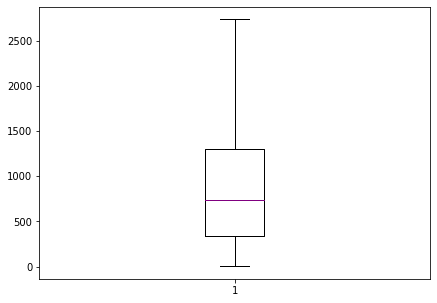

Download (right-click, save target as ...) this jupyterlab notebook from:
https://3.137.111.182/engr-1330-webbook/8-Labs/Lab15/Lab15_Dev.ipynb
Download (right-click, save target as ...) AirTraffic database file from:
https://3.137.111.182/engr-1330-webbook/8-Labs/Lab15/AirTraffic.csv
Download (right-click, save target as ...) Lubbock_Oct_T&P database file from:
https://3.137.111.182/engr-1330-webbook/8-Labs/Lab15/Lubbock_Oct_T&P.csv
Laboratory 15: "Avoiding Data Alexithymia" or "Perks of Using Descriptive Statistics
# Preamble script block to identify host, user, and kernel
import sys
! hostname
! whoami
print(sys.executable)
print(sys.version)
print(sys.version_info)
DESKTOP-EH6HD63
desktop-eh6hd63\farha
C:\Users\Farha\Anaconda3\python.exe
3.7.4 (default, Aug 9 2019, 18:34:13) [MSC v.1915 64 bit (AMD64)]
sys.version_info(major=3, minor=7, micro=4, releaselevel='final', serial=0)
Full name:
R#:
Title of the notebook:
Date:
Descriptive Statistics with Python

# Let's import the necessary libraries:
import numpy as np
import pandas as pd
import statistics
import scipy.stats
import matplotlib.pyplot as plt
Example1:
1. Read the "AirTraffic.csv" file as a dataframe and check its first few rows.
2. Use descriptive functions of the Pandas library to learn more about the dataframe
3. Compute the arithmetic and harmonic mean of 'Distance'.
4. Find the median of 'Distance'.
5. Find the range of 'Distance'.
6. Find the IQR of 'Distance'.
7. Use descriptive functions of the Pandas library to get a 5-number summary of 'Distance'. Plot a box plot without outliers.
8. Find the variance and standard deviation of 'Distance'.
9. Find the skewness and kurtosis 'Distance'.
AT = pd.read_csv("AirTraffic.csv") #Read the .csv file a data frame
AT.head()
| DISTANCE | ORIGIN_COUNTRY_NAME | DEST_COUNTRY_NAME | AIRCRAFT_GROUP | CLASS | DATA_SOURCE | |
|---|---|---|---|---|---|---|
| 0 | 3855 | United States | Germany | 6 | G | IF |
| 1 | 5805 | United States | Germany | 6 | G | IF |
| 2 | 801 | United States | United States | 6 | G | DF |
| 3 | 4343 | United States | Germany | 6 | G | IF |
| 4 | 5142 | United States | Germany | 6 | G | IF |
AT.info()
<class 'pandas.core.frame.DataFrame'>
RangeIndex: 118279 entries, 0 to 118278
Data columns (total 6 columns):
DISTANCE 118279 non-null int64
ORIGIN_COUNTRY_NAME 118279 non-null object
DEST_COUNTRY_NAME 118279 non-null object
AIRCRAFT_GROUP 118279 non-null int64
CLASS 118279 non-null object
DATA_SOURCE 118279 non-null object
dtypes: int64(2), object(4)
memory usage: 5.4+ MB
Distance = AT['DISTANCE']
# Use the mean function from the statistics library
mean = statistics.mean(Distance)
print("The arithmetic mean distance of the 2020 flights is ",round(mean,2),"miles")
hmean = statistics.harmonic_mean(Distance)
print("The harmonic mean distance of the 2020 flights is ",round(hmean,2),"miles")
The arithmetic mean distance of the 2020 flights is 1101.12 miles
The harmonic mean distance of the 2020 flights is 220.81 miles
Distance = AT['DISTANCE']
# Use the mean function from the statistics library
median = statistics.median(Distance)
print("The median of distance of the 2020 flights is ",median,"miles")
The median of distance of the 2020 flights is 740 miles
Distance = AT['DISTANCE']
Range = np.ptp(Distance) #ptp stands for Peak To Peak
print("The range of distance of the 2020 flights is ",Range,"miles")
The range of distance of the 2020 flights is 9778 miles
C:\Users\Farha\Anaconda3\lib\site-packages\numpy\core\fromnumeric.py:2389: FutureWarning: Method .ptp is deprecated and will be removed in a future version. Use numpy.ptp instead.
return ptp(axis=axis, out=out, **kwargs)
Distance = AT['DISTANCE']
IQR = scipy.stats.iqr(Distance)
print("The IQR of distance of the 2020 flights is ",IQR,"miles")
The IQR of distance of the 2020 flights is 968.0 miles
Distance = AT['DISTANCE']
Distance.describe()
count 118279.000000
mean 1101.120165
std 1260.423448
min 1.000000
25% 335.000000
50% 740.000000
75% 1303.000000
max 9779.000000
Name: DISTANCE, dtype: float64
fig = plt.figure(figsize =(7, 5))
plt.boxplot(Distance,medianprops={'linewidth': 1, 'color': 'purple'},showfliers=False)
plt.show()

Distance = AT['DISTANCE']
var = statistics.variance(Distance)
sd = statistics.stdev(Distance)
print("The variance and standard deviation of distance of the 2020 flights is ",round(var,2)," and ",round(sd,2)," respectively")
The variance and standard deviation of distance of the 2020 flights is 1588667.27 and 1260.42 respectively
Distance = AT['DISTANCE']
skew = scipy.stats.skew(Distance)
kurtosis = scipy.stats.kurtosis(Distance)
print("The skewness and kurtosis of distance of the 2020 flights is ",round(skew,2)," and ",round(kurtosis,2)," respectively")
The skewness and kurtosis of distance of the 2020 flights is 2.63 and 8.13 respectively
Example:
1. Read the "Lubbock_Oct_T&P.csv" file as a dataframe and check its first few rows.
2. Use descriptive functions of the Pandas library and explain the format of the dataframe
3. Compute the arithmetic and harmonic mean of 'temperature'.
4. Find the median of 'precipitation' and 'temperature'.
5. Find the range and IQR of 'precipitation'.
6. Find the 10th,40th, and 70th percentile of 'temperature'.
7. Provide a 5-number summary of 'precipitation'. Plot a box plot without outliers. Interpret it in your own words
8. Find the variance and standard deviation of 'precipitation'.
9. Find the skewness and kurtosis 'precipitation'.

Here are some great reads on this topic:
- "Python Statistics Fundamentals: How to Describe Your Data" by Mirko Stojiljković available at https://realpython.com/python-statistics/
- "Introduction to Descriptive Statistics and Probability for Data Science" by Abhishek Kumar available at https://towardsdatascience.com/intro-to-descriptive-statistics-and-probability-for-data-science-8effec826488
- "Statistics for Data Science — A beginners guide to Descriptive Statistics in Python" by Angel Das available at https://towardsdatascience.com/statistics-for-data-science-a-beginners-guide-to-descriptive-statistics-in-python-9e0daa30809a
- "Interpreting Data Using Descriptive Statistics with Python" by Deepika Singh available at https://www.pluralsight.com/guides/interpreting-data-using-descriptive-statistics-python
Here are some great videos on these topics:
- "Descriptive Statistics Using Scipy , Numpy and Pandas in Python - Tutorial 13" by TheEngineeringWorld available at https://www.youtube.com/watch?v=mWIwXqtZmd8
- "Python for Data Analysis: Descriptive Statistics" by DataDaft available at https://www.youtube.com/watch?v=3mELSEnGBvA
- "Introduction to Descriptive Statistics" by Teresa Johnson available at https://www.youtube.com/watch?v=QoQbR4lVLrs

Exercise: Why Descriptive Statistics?
What is the importance and application of descriptive statistics, especially in Engineering.
Make sure to cite any resources that you may use.